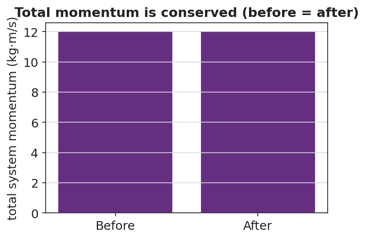
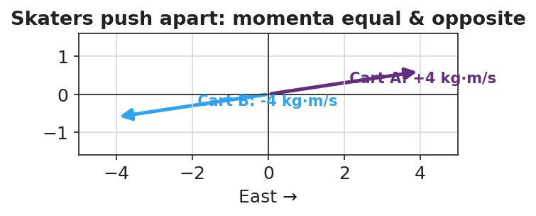

Unit: Momentum & Impulse — Lesson 03: Conservation of Momentum
Phenomenon
Two ice skaters stand still, facing each other, then push off — both glide away in opposite directions. On a cart track, a moving cart hits a still cart and the motion transfers. Nobody added a push from outside, yet motion appears. Where does it come from — and what is the total now?
Driving Question
When two objects interact, what happens to the total momentum of the system?
Notice & Wonder
Watch the skaters and the carts. Write two things you notice and two things you wonder.
Initial Model
Draw two carts before and after a collision. Label each cart's momentum arrow (size and direction) in both pictures. Predict: adding the arrows as vectors, is the total the same before and after?
Investigate
Set the mass and velocity of two carts, then press Collide. The carts collide and stick together (a perfectly inelastic collision). Compare the total momentum before and after — predict first, then check. No outside push acts, so what should stay the same?
Total p before = 6.0 kg·m/s · Total p after = — kg·m/s
Σp before = Σp after — momentum is conserved.
The total system momentum is the same before and after:


Make It Make Sense
- Two skaters at rest push apart. The total before is zero. Explain why the total after is also zero, even though both are now moving.
- A 2 kg cart moving at 3 m/s East hits a still 1 kg cart and they stick. What outside force, if present, would stop momentum from being conserved?
- If two skaters of different mass push apart, which one moves faster? Justify with p = m·v and the idea that the total stays zero.
Stuck? Sentence frame
"The total momentum is the ___ before and after because the ___ force on the system is ___."
Key Vocabulary (max 3)
- conservation of momentum — the total momentum of a system stays constant when the external net force on it is zero: Σp_before = Σp_after
- system — the set of objects whose momenta we add together; interactions inside it are internal forces
- collision — an interaction in which objects exert forces on each other for a short time (a push-off counts)
Revise Your Model
Return to your before/after cart drawing. Write Σp_before = Σp_after using your actual signed momentum values. If one value was unknown, solve for it.
Return to the Phenomenon
In one sentence, explain why the two skaters glide apart at different speeds if one is heavier — using conservation of momentum.
Exit Ticket + Closing Reflection
- A 2 kg cart moving East at 3 m/s collides with a 1 kg cart at rest, and they stick together.
(a) Find the total momentum of the system before the collision. (b) After they stick, what is the combined mass, and what is their velocity? (c) State the condition under which momentum is conserved. - Reflection: Whose prediction in your group was closest today, and what did you learn from comparing predictions to data?
Explore Further
- PhET Collision Lab — turn on the momentum vectors and the "total" readout
- Javalab — Conservation of Momentum
- Ice skaters pushing off each other